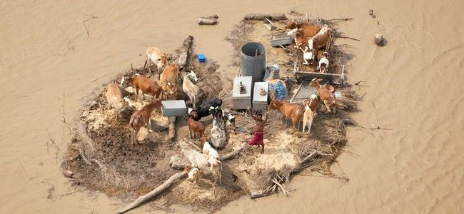
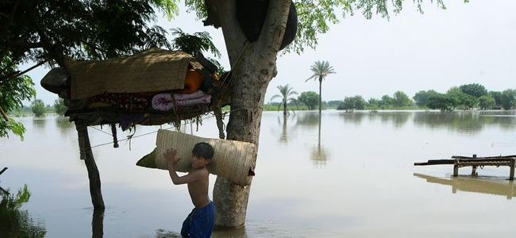
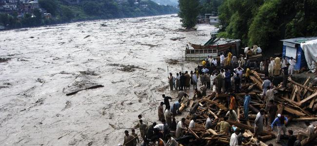
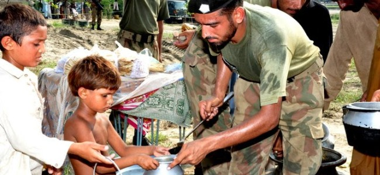
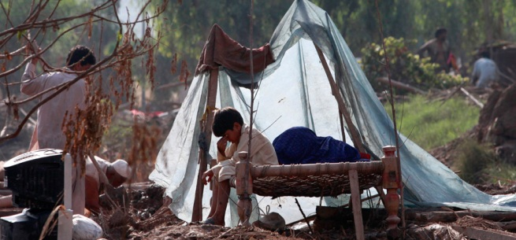

{% if site_wide_announcements %}
{% for announcement in site_wide_announcements %}
×
{{ announcement.creation_date }}
{{ announcement.content }}
{% endfor %}
{% endif %}
-

Earthquake Risk Assessment
Two days Workshop on Earthquake Risk Assessment to be organized for the NWG member in CDA Islamabad. Detail Information and agenda will be available soon...
-

Flood Risk Assessment
Two days Workshop on Flood Risk Assessment to be organized for the NWG member in CDA Islamabad. Detail Information and agenda will be available soon...
-

Meeting on Risk Assessment Project
Meeting was organized between NDMA, World Bank, CDA and Network of Disaster Management
Practitioners (Pvt.) Ltd on Risk Assessment Project and involvement of CDA as NWG member.
-
Meeting
Meeting has been planned during Feb between NDMA, GSP, PMD, SUPARCO, WB and Network of Disaster Managment Priv PVT LTd to nominate focal persons for the risk assessment project and active involvement of the se organizations during the project phase.


National Working Group
National Working Group on Vulnerability and Risk Assessment is constituted by NDMA to provide strategic guidance and to coordinate all activities related to vulnerability and risk assessment in the country. The purpose of the National Working Group is to ensure the consistency in methodologies employed for disaster risk assessments, uniformity in data format during collection process, and coordinating risk assessments efforts to ensure no gaps exist and to avoid overlapping of efforts.
Disaster Info
Pakistan Disaster Info is a nationally owned, open source data platform that aims to
enable the mandated agencies to share their geospatial datasets and maps on hazards and
exposure. In order to ensure that risk information is widely accessible to all decision makers,
this platform will also host newly developed datasets, hazard and risk information.
For more information visit National Disaster Management Authority
Development of a National Platform for Risk Assessment and Catastrophe risk financing Programme in Pakistan
This project is being supported by the World Bank under the Development of a National Platform for Risk Assessment and Catastrophe risk financing Programme in
Pakistan which aims to implement risk identification and financing
framework that will encourage data-driven analysis and lead to a reduction in
disaster risk over the long term.
Evidence-based Risk Analysis
The programme will test the use of evidence-based risk analysis in public policy
making through a series of interventions to
(i) provide risk information,
(ii) train users, and
(iii) Improve decision-making systems in disaster risk management.
Disaster Info
Pakistan Disaster Info is a nationally owned, open source data platform that aims to
enable the mandated agencies to share their geospatial datasets and maps on hazards and
exposure. In order to ensure that risk information is widely accessible to all decision makers,
this platform will also host newly developed datasets, hazard and risk information.
For more information visit National Disaster Management Authority
Disaster Info
Pakistan Disaster Info is a nationally owned, open source data platform that aims to
enable the mandated agencies to share their geospatial datasets and maps on hazards and
exposure. In order to ensure that risk information is widely accessible to all decision makers,
this platform will also host newly developed datasets, hazard and risk information.
For more information visit National Disaster Management Authority
Pakistan Disaster Info is a nationally owned, open source data platform that aims to
enable the mandated agencies to share their geospatial datasets and maps on hazards and
exposure. In order to ensure that risk information is widely accessible to all decision makers,
this platform will also host newly developed datasets, hazard and risk information.
For more information visit National Disaster Management Authority.
This project is being supported by
Global Facility for Disaster Reduction and Recovery (GFDRR), World Bank and Department for International Development (DFID)
under the Development of a National Platform for Risk Assessment and Catastrophe risk financing Programme in Pakistan which aims to
implement risk identification and financing framework that will encourage data-driven analysis
and lead to a reduction in disaster risk over the long term.
The programme will test the use of evidence-based risk analysis in public policy
making through a series of interventions to
- Povide risk information,
- Train users, and
- Improve decision-making systems in disaster risk management.